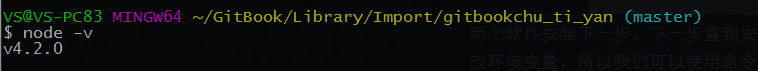

Windows下搭建Gitbook平台
前面有提到Gitbook是基于 Node.js 的命令行工具，所以要想使用Gitbook就需要下载和安装Node.js
最好再下载安装一个Git: https://git-scm.com/download/win
Node.js官网: https://nodejs.org/en/
两个软件安装下一步、下一步直到安装完成即可。
因为Node.js在安装后会自动修改环境变量，所以我们可以使用命令node -v来验证是否安装成功。

安装Gitbook
在我们安装Git后，安装Gitbook会变的十分简单。 步骤如下：
- 鼠标右键桌面——Git Bash here 进入Git命令行界面
- npm install gitbook-cli -g 命令方式安装Gitbook
命令行方式安装过程默认使用国外镜像，可以考虑切换国内镜像：
- 打开.npmrc文件（在用户主目录下）
- 加入配置信息
registry = http://registry.npm.taobao.org
到此Gitbook就安装完成了！
下一篇：创建本地电子书